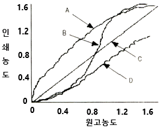
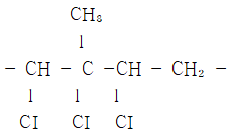
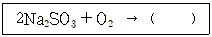
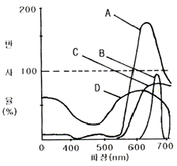
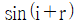
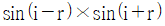
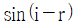
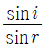
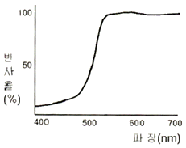
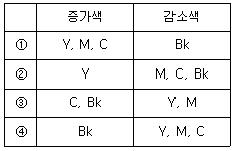

인쇄산업기사 (2007-05-13 기출문제)
1과목: 인쇄공학
1. 급유의 효과 중 변동하중(荷重) 또는 인쇄압력 등 마찰부에 국부적이고 순간적으로 높은 압력을 분산시키기 위한 것은?
- 방청효과
- 감마효과
- 냉각효과
- 응력분산효과
(정답률: 알수없음)

2. HLB 값이 8인 60%의 용액과 HLB 값이 10인 40%의 용액을 혼합하였을 때 이 혼합된 용액의 HLB값은?
- 2.4
- 5.2
- 8.8
- 19.2
(정답률: 알수없음)
3. 다음 그래프는 컬러사진의 원고 농도와 인쇄물의 농도를 개략적으로 나타낸것이다. 현실적으로 가능한 인쇄물에 가장 가까운 것은?

- A
- B
- C
- D
(정답률: 알수없음)
4. 히스테리시스(hysteresis)에 대하여 가장 옳게 설명한것은?
- 온도가 낮을 때 종이의 표면 강도가 높아지고 온도가 높을 때 종이의 표면 강도가 낮아지는 현상
- 외부의 습도가 높거나 낮을 경우 종이가 흡습 또는 탈습하여 평형 상태로 되어 종이의 수분함유량이 달라지는 현상
- 인쇄된 잉크피막에서 발생하는 증기의 작용에 의하여 쌓아놓은 종이의 뒷면이 황색으로 변하는 현상
- 다색인쇄에서 겹인쇄를 할 때 잉크가 잘 오르지 않는 현상
(정답률: 알수없음)
5. 오프셋 인쇄에서 유화 현상이 과도하게 발생할 경우 잉크의 유동성과 전이율은 어떻게 되는가?
- 물방울이 잉크의 유동을 증가시키므로 인쇄물이 선명해진다.
- 물방울이 잉크의 유동을 증가시키므로 잉크의 전이가 향상된다.
- 물방울이 잉크의 유동을 방해하므로 잉크의 전이가 나빠진다.
- 물방울이 잉크의 유동을 방해하므로 인쇄물이 선명해진다.
(정답률: 알수없음)
6. 포장용지의 재료로서 지기(carton)가 갖추어야 할 조건으로 가장 거리가 먼 것은?
- 내용물의 보호성이 있어야한다.
- 폐기처리가 쉬워야 한다.
- 인쇄적성이 좋아야 한다.
- 제책이 용이해야 한다.
(정답률: 알수없음)
7. 책을 표면가공 처리하는 목적이 아닌 것은?
- 인쇄물에 광택을 낸다.
- 잉크의 퇴색을 방지한다.
- 인쇄 원가를 낮춘다.
- 습기를 방지한다.
(정답률: 알수없음)
8. 컬(curl)의 발생은 용지의 수분과 주변 환경의 상대습도가 차이가 날 때 많이 발생된다. 다음 중 컬의 발생이 가장 적은 상대습도는?
- 20~30%
- 30~40%
- 50~60%
- 70~90%
(정답률: 알수없음)
9. 화선의 커짐이 생기는 원인으로 가장 거리가 먼 것은?
- 제판할 때 빛쬠량, 현상 등의 조건이 적합하지 않을 때
- 잉크의 택(tack)이 지나치게 낮을 때
- 습수량이 적거나 ph가 지나치게 높을 때
- 실내온도가 지나치게 낮을 때
(정답률: 알수없음)
10. 다음 중 잉크의 분열(splitting)에 영향을 주는 요인과 가장 거리가 먼 것은?
- 인쇄압력
- 인쇄속도
- 잉크의 동적 점도
- 인쇄판의 두께
(정답률: 알수없음)
11. 다음 중 인쇄 도중에 발생하는 하프톤 도트(halftone value)의 변형이 아닌 것은?
- 도트 게인(dot gain)
- 파일링 인(filling in)
- 오프셋팅(offsetting)
- 더블링(doubling)
(정답률: 알수없음)
12. 뜯김(picking)이 발생하여 이것이 누적되면 생길 가능성이 가장 큰 인쇄 사고는?
- 파일링(piling)
- 정전기
- 컬링(curling)
- 배어남(strike through)
(정답률: 알수없음)
13. 윤전 인쇄물이 건조될 때 발생되는 부풀음(blistering) 현상의 원인과 가장 거리가 먼 것은?
- 종이 도포층의 통기성이 높을 때
- 종이의 수분 함유량이 많을 때
- 건조장치의 건조 온도가 너무 높을 때
- 잉크가 유화되었을 때
(정답률: 알수없음)
14. 도트 게인(dot gain)에 대한 대책으로 가장 거리가 먼 것은?
- 제판 공정에서 망점을 미리 작게 재현한다.
- 잉크막을 두껍게 인쇄한다.
- 통꾸밈을 정확하게 한다.
- 종이뜯김 방지용으로 컴파운드와 리듀서(reducer)를 많이 넣어서는 안 된다.
(정답률: 알수없음)
15. 속장을 철사로 매고 책등에 풀칠을 한 다음 철사가 보이지 않도록 클로스(cloth)로 감아 붙이는 제책 방식은?
- 무선철
- 스프링
- 양장
- 호부장
(정답률: 알수없음)
16. 인쇄작업 중 발생하는 정전기는 많은 문제를 일으키는데 이를 방지하기 위한 대책이 아닌 것은?
- 절연저항을 낮춘다.
- 접지를 한다.
- 피뢰기를 설치한다.
- 제전기를 사용한다.
(정답률: 알수없음)
17. 인쇄잉크의 끈기를 말하는 것으로 두 손가락 사이에 인쇄잉크를 묻힌 다음 당길 때 저항하는 힘을 무엇이라고 하는가?
- 탄성(elasticity)
- 택(tack)
- 예사성(length)
- 요변성(thixotropy)
(정답률: 알수없음)
18. 계면활성제를 분자구조에 의해 분류할 때 친수성기를 나타내는 것이 아닌 것은?
- COONa
- CONH2
- OH
- C2H5
(정답률: 알수없음)
19. 다음 중 인쇄용지의 뜯김 현상을 측정하는 시험법은?
- 유흡수미터법
- 베크시험법
- 데니슨왁스법
- 열수추출법
(정답률: 알수없음)
20. 산업재해 분석시 직접적인 원인과 간접적인 원인으로 나눌 때 직접적인 원인에 해당되는 것은?
- 물적 원인
- 기술적 원인
- 교육적 원인
- 관리적 원인
(정답률: 알수없음)
2과목: 인쇄재료학
21. 내산, 내알칼리성이 우수하고 그라비어 잉크 제조에 사용되는 것으로 다음과 같은 구조식과 곤계있는 것은?

- 니트로셀룰로오스
- 에틸셀룰로오스
- 메틸셀룰로오스
- 염화고무
(정답률: 알수없음)
22. 2~6매 정도의 종이를 측정기에 끼워서 측정한 값을 1매당 g수로 환산하여 나타내며, 엘멘도르프형 시험기를 사용하여 측정하는 것은?
- 인장강도
- 인열강도
- 사이즈도
- 표면강도
(정답률: 알수없음)
23. PS판 양극 산화 반응에 사용하는 전해액으로 사용할 수 없는 것은?
- 황산
- 질산
- 인산
- 크롬산
(정답률: 알수없음)
24. 일반적으로 그라비어 인쇄로 플라스틱 필름에 인쇄를 할 때 가장 적합한 잉크의 건조방식은?
- 증발 건조형
- 침투 건조형
- 가열 융착형
- 침전 건조형
(정답률: 알수없음)
25. 종이는 물에 흡수하는 성질이 있는데 이것은 종이에 형성되어있는 미세한 공극과 펄프의 표면이 친수성이기 때문이다. 종이의 수분 흡수력을 조절하기 위해 첨가하는 물질은?
- 충전제
- 장섬유
- 보류향상제
- 사이즈제
(정답률: 알수없음)
26. 충전(loading)은 종이를 순백 또는 불투명하게 하고 지면을 치밀, 평활하게 하기 위하여 실시한다. 충전제로서 가장 적당하지 않은 것은?
- 점토
- 백토
- 활석
- 탄산알루미늄
(정답률: 알수없음)
27. 그라비어 제판에 사용되는 카본티슈(carbontissue)를 감광성을 가지게 하는 가장 적합한 중크롬산염은?
- (NH4)2Cr2O7
- Na2Cr2O7
- K2Cr2O7
- Li2Cr2O7
(정답률: 알수없음)
28. 잉크의 건조막에 유연성을 부여하여 잉크가 갈라지는 현상을 방지하여 주는 역할을 하는 것은?
- 습윤제
- 증점제
- 안정제
- 가소제
(정답률: 알수없음)
29. 화학 펄프에 대한 설명으로 가장 거리가 먼 것은?
- 기계 펄프보다 수율이 낮다.
- 리그닌을 제거한 펄프이다.
- 섬유 길이가 짧고 미세분의 함량이 높다.
- 섬유상의 형태는 셀룰로오스로 구성한다.
(정답률: 알수없음)
30. 평판제판용 감광재료의 감광막 두께와 빛쬠시간을 일정하게 유지하기 위한 조건과 가장 거리가 먼 것은?
- 감광액의 점도
- 판 표면의 모랫발 상태
- 감광액 및 판재료의 온도
- 판 및 빛쬠기의 종류
(정답률: 알수없음)
31. 다음 중 국판 전기의 규격은 몇 mm인가?
- 636×939
- 788×1091
- 900×1200
- 765×1085
(정답률: 알수없음)
32. 다음 축임물의 성분 중 주로 판면의 불감지화 작용을 하는 것은?
- 질산나트륨
- 아라비아고무액
- 중크롬산나트륨
- 아황산나트륨
(정답률: 알수없음)
33. 다음 감광재료 중 가장 저감도로서 해상도가 가장 높은 것은?
- 은염사진
- 전자사진
- 디아조 필름
- 캘코게나이드
(정답률: 알수없음)
34. 마이크로 필름이 갖추어야 할 조건으로 가장 거리가 먼 것은?
- 고해상력을 가질 것
- 고온 신속처리 적성을 가질 것
- 감도가 낮고 포그(fog)가 잘 형성될 것
- 처리 후 필름 보존성이 양호할 것
(정답률: 알수없음)
35. 염료의 용액이 체질과 침전제를 혼합하여 물에 녹지 않는 성질로 만든 착색료는?
- 무기 안료
- 체질 안료
- 레이크 안료
- 페이스트 안료
(정답률: 알수없음)
36. 다음은 현상액 중에서 보항제의 작용에 대한 반응식이다. ( )안에 알맞은 것은?

- 2Na2SO4
- Na2SO4
- 2Na2SO5
- Na4SO6
(정답률: 알수없음)
37. 일반적으로 종이의 제조에 있어 강도적 성질에 가장 큰 영향을 미치는 사항은?
- 펄프의 종류와 성질
- 충전제의 종류와 입자 크기
- 전분의 종류와 용액의 온도
- 용수의 온도와 경도
(정답률: 알수없음)
38. 다음 중에서 펄프의 고해가 계속 진행될수록 감소하는 강도적 성질에 해당되는 것은?
- 인열강도
- 인장강도
- 파열강도
- 흡습도
(정답률: 알수없음)
39. 오프셋 인쇄시 종이의 치수변화가 가장 적은 상대습도는?
- 10~15%
- 20~35%
- 40~60%
- 65~80%
(정답률: 알수없음)
40. 컴파운드(Compound)에 대한 설명 중 옳지 않은 것은?
- 잉크에 넣어 그 성능을 개선하여 준다.
- 잉크의 작용성 및 점착성을 개선하여 준다.
- 유화제와 분산제로 작용하여 잉크 중의 안료입자가 응결하는 것을 방지한다.
- 그리스를 알맞게 넣으면 잉크의 늘기를 길게 하고 끈기를 강하게 하여 준다.
(정답률: 알수없음)
3과목: 인쇄색채학
41. 상업미술에 널리 응용되고 있는 오스트발트 색입체에서 같은 색조의 색을 선택하려고 할 때 사용하는 방법이 아닌 것은?
- 등백색 계열
- 등순색 계열
- 등가색환 계열
- 등보색, 등감색 계열
(정답률: 알수없음)
42. 다음은 여러 가지 색료의 분광반사율을 개략적으로 나타낸 것이다. 형광적 특성을 가진 색에 가장 가까운 것은?

- A
- B
- C
- D
(정답률: 알수없음)
43. 조명의 밝기나 분광분표가 변화하여도 우리가 인지하는 색이나 밝기가 변화하지 않는 특성을 무엇이라고 하는가?
- 항상성
- 색지각
- 고유자극
- 계시대비
(정답률: 알수없음)
44. 백색광에 순응되어 있는 눈의 상태를 무엇이라고 하는가?
- 명순응(明順應)
- 암순응(暗順應)
- 무채순응(無彩順應)
- 색순응(色順應)
(정답률: 알수없음)
45. 컬러인쇄 원고에서 BGR 각각의 필터로 분해 촬영하여 얻어진 분해 네거티브판을 옳게 연결한 것은?
- Blue - Yellow, Green - Magenta, Red - Cyan
- Blue - Magenta, Green - Yellow, Red - Cyan
- Blue - Cyan, Green - Magenta, Red - Yellow
- Blue - Yellow, Green - Cyan, Red - Magenta
(정답률: 알수없음)
46. 색상환에서 빨강색과 청록색을 나란히 놓았더니 채도가 높아 보였다. 이때 일어나는 대비 현상과 가장 관련있는 것은?
- 명도대비
- 잔상대비
- 보색대비
- 계시대비
(정답률: 알수없음)
47. 광원의 3원색에 대한 색재현 관계식을 잘못 나타낸 것은? (단, R은 Red, G는 Green, B는 Blue, W는 White, C는 Cyan, P는 Purple을 나타낸다.)
- R +C = W – P
- R +G = W - B
- G +B = W – R
- R +B = W - G
(정답률: 알수없음)
48. 일반적으로 부드럽고 즐거운 미적 상태를 나타내며, 어떤 사물의 상태와도 무관한 색으로서, 순수색의 감각을 가능하게 하는 색은?
- 경영색
- 평면색
- 고유색
- 표면색
(정답률: 알수없음)
49. 색채를 객관적으로 계측함에 있어 측정값에 영향을 미치는 3가지 요소가 아닌 것은?
- 광원의 상대분광분포
- 시료의 분광확산반사율
- 관측지의 색채시감효율
- 광원의 분광흡수율
(정답률: 알수없음)
50. 색의 삼속성 중에서 명도의 차이에 따라 가장 크게 좌우 되는 색채 감정에 해당되는 것은?
- 중량감
- 강약감
- 온도감
- 흥분감
(정답률: 알수없음)
51. 원색 잉크 중에서 색상 오차가 가장 적은 것은?
- Cyan잉크
- Magenta잉크
- Yellow잉크
- Blue잉크
(정답률: 알수없음)
52. 셔브뢸의 색채조화론은 유사의 조화와 대비의 조화로 나눌 수 있는데 대비의 조화가 아닌 것은?
- 근접채도대비에 따른 조화
- 명도대비에 따른 조화
- 보색대비에 따른 조화
- 근접보색대비에 따른 조화
(정답률: 알수없음)
53. Ostwald 표색계는 일반적인 관찰조건에서 기본이 되는 3색이 적절한 비의 양으로 혼합되어 보이는 것이라는 가설 아래에서 표색 체계를 구성하였는데 이 때의 기본 3색량에 해당되는 것은?
- 순색량, 검정색량, 흰색량
- 순색량, 노랑색량, 검정색량
- 흰색량, 검정색량, 빨강색량
- 검정색량, 파랑색량, 흰색량
(정답률: 알수없음)
54. 다음 중 색상별 파장 영역이 잘못 연결된 것은?
- 노랑(Yellow) : 450 ~ 480nm
- 녹색(Green) : 498 ~ 530nm
- 주황(Orange) : 586 ~ 597nm
- 빨강(Red) : 640 ~ 780nm
(정답률: 알수없음)
55. Munsell 표색계에서 지각색은 색상, 명도, 채도에 따라 표색한다. 색상이 5PB, 명도가 5, 채도가 6 일 경우 옳게 나타낸 것은?
- 5-6-5PB
- 5PB 5/6
- 5PB 6/5
- 5/6 5PB
(정답률: 알수없음)
56. 빛이 어떤 매질에서 다른 매질로 진행할 때 입사각을 I, 굴절각을 r이라 하면 굴절율을 나타내는 식은?




(정답률: 알수없음)
57. 어떤 조명광이나 물체색을 오랫동안 보면 그 색에 순응되어 색의 지각이 약해지는 현상은?
- 명순응(light adaptation)
- 암순응(dark adaptation)
- 색순응(chromatic adaptation)
- 명순응시(photopic vision)
(정답률: 알수없음)
58. 다음 그림과 같은 분광 반사율을 나타내는 원색 잉크는?

- Yellow
- Magenta
- Cyan
- Black
(정답률: 알수없음)
59. 감법혼색에 대한 설명 중 틀린 것은?
- 혼합하면 할수록 명도가 높아진다.
- 혼합하면 할수록 채도가 높아진다.
- 빨강, 녹색, 파랑의 2차색들은 1차색보다 채도가 낮아진다.
- 빨강, 녹색, 파랑의 2차색들은 1차색보다 명도가 낮아진다.
(정답률: 알수없음)
60. 배경색을 검정으로 했을 때 가장 명시도가 높은 색은?
- 노랑
- 주황
- 황록
- 빨강
(정답률: 알수없음)
4과목: 사진제판공학
61. 스크린 제판시 상대습도가 60%일 때 6분이 적정 노출 시간이라면 상대 습도가 70%일 때 얼마의 노출 시간이 필요한가?
- 2분
- 4분
- 6분
- 9분
(정답률: 알수없음)
62. 피사계심도(depth of field)에 대한 설명으로 틀린 것은?
- 조리개를 조일수록 깊어지고 열수록 얕아진다.
- 렌즈의 초점거리가 짧을수록 깊어지고 길수록 얕아진다.
- 피사체와의 촬영거리가 멀수록 얕아지고 가까울수록 깊어진다.
- 피사계심도는 초점이 맞는 법위가 넓을수록 깊다.
(정답률: 알수없음)
63. 다음중 솔라리제이션(solarization) 현상에 대하여 옳게 설명한 것은?
- 노출량이 적어서 현상이 잘 되지 않는 현상
- 노출량이 필요 이상 많아서 모두 흑화되어 버리는 현상
- 노출량과 흑화 농도의 비례 현상
- 노출량이 필요 이상 많으면 일어나는 농도 반전 현상
(정답률: 알수없음)
64. 그라비어 제판에 대한 설명으로 가장 거리가 먼 것은?
- 컨벤셔널 그라비어는 깊이가 다른 오목점으로 농담을 나타낸다.
- 직접 망점 그라비어는 깊이가 같고 망점의 대소로 농담을 나타낸다.
- 그라비어의 감광재료는 젤라틴과 안료, 중크롬산칼륨으로 이루어져 있다.
- 그라비어는 일반적으로 사진 볼록판 방식이다.
(정답률: 알수없음)
65. RIP(Raster Image Processor)에 대한 설명 중 옳지 않은 것은?
- 디지털 정보를 실제 출력 정보로 변환시킨다.
- 벡터 정보를 비트맵 정보로 변환시킨다.
- 편집된 내용은 항상 한 줄 단위로 분석하여 인쇄정보로 보낸다.
- 소프트웨어 RIP은 하드웨어 RIP에 비해 속도가 느리다.
(정답률: 알수없음)
66. 프리즘을 통과한 빛이 각각의 굴절각의 차이로 여러 가지 색대로 나누어지는 현상을 무엇이라고 하는가?
- 간접
- 회절
- 분산
- 편광
(정답률: 알수없음)
67. 피사체가 받는 빛의 최대량과 최소량과의 차를 무엇이라고 하는가?
- 조명율
- 반사율
- 관용도
- 피사체 콘트라스트
(정답률: 알수없음)
68. 책의 발행인과 발행처, 저자와 저작권에 대한 공지사항을 명문화하는 것으로 독자들에게 책 속에 담긴 정보의 소유권과 권리를 인지시키는 지면은 무엇인가?
- 저작권(판권)
- 감사의 말
- 서문
- 헌사
(정답률: 알수없음)
69. 컬러 스캐너의 UCR 회로에서 UCR을 증가시킬 경우에 증가되는 색과 감소되는 색을 옳게 나타낸 것은? (단, Y는 Yellow, M은 Magenta, C는 Cyan, Bk는 Black 을 나타낸다.)

- ①
- ②
- ③
- ④
(정답률: 알수없음)
70. 감광재료에 노출하여 현상하는 경우 고조도의 광원으로 단시간 노출이나 저조도의 광원으로 장시간 노출에서는 같은 적정 노출량이라도 현상을 한 후에 화상농도는 동일하지 않은데 이러한 현상을 무엇이라고 하는가?
- 위사진효과
- 프로큐레이션
- 헐레이션
- 상반착불궤
(정답률: 알수없음)
71. 교정필름, 인쇄판 및 인쇄물에서 망점의 품질 평가를 결정하는 관리용 스케일로서 단계별로 숫자(0~9) 모양으로 표시하여 관리하도록 되어 있는 것은?
- 그레이스케일
- 컬러패치
- 도트게인스케일
- 그라데이션스케일
(정답률: 알수없음)
72. 그라비어 제판에서 헬리오클리쇼그래프 방식의 특징이 아닌 것은?
- 카본티슈가 필요하다
- 화학적 부식 공정이 필요없다.
- 전자적인 조각방식이다.
- 한 장의 원판 포지티브를 제작한다.
(정답률: 알수없음)
73. 광도전성 물질(백색 산화아연)을 도포한 감광지를 대전 장치에 넣고 코로나 방전으로 정전하를 부여하여 감광성을 지니게 하는 원리를 이용한 교정 방식은?
- 디아조 방식
- 청사진 방식
- CRT 방식
- 전자사진 방식
(정답률: 알수없음)
74. 일반적인 플렉소용 감광성 수지판의 제작 공정을 옳게 나타낸 것은?
- 네거티브필름 → 뒷면빛쬠 → 주빛쬠 → 현상 → 건조 → 후처리 → 후빛쬠
- 포지티브필름 → 뒷면빛쬠 → 후처리 → 주빛쬠 → 현상 → 건조 → 후빛쬠
- 포지티브필름 → 주빛쬠 → 뒷면빛쬠 → 현상 → 건조 →후처리 → 후빛쬠
- 네거티브필름 → 후처리 → 후빛쬠→ 주빛쬠 → 뒷면빛쬠 → 현상 → 건조
(정답률: 알수없음)
75. 교정 인쇄에서 컬러 매니지먼트 처리에 따른 결과와 가장 거리가 먼 것은?
- 인쇄되는 화상과 거의 차이가 없는 화상을 모니터에서 확인 할 수 있다.
- 주변기기의 컬러 공간을 조정하므로 이미지의 컬러를 정확하게 재현할 수 있다.
- 하나의 출력 프로세스를 다른 출력 장치에서 볼 수 없다.
- 컬러 매니지먼트 시스템에 의해서 컬러 재현의 반복과 예측이 가능하다.
(정답률: 알수없음)
76. 할로겐화은이 빛이나 화학약품 또는 다른 물질에 의해서도 잠상을 일으키며, 현상 작업시에도 흑화되는 경우가 있는데 이러한 현상과 관계있는 것은?
- 허셀효과
- 에지효과
- 코스틴스키효과
- 위사진효과
(정답률: 알수없음)
77. 바코드 인쇄의 제판에 상용되는 바코드 원고는 어떤 형태가 가장 바람직한가?
- 포지티브 반사원고
- 네거티브 반사원고
- 포지티브 필름
- 네거티브 필름
(정답률: 알수없음)
78. 반사 농도계로 Yellow 잉크의 농도를 측정하려고 한다. 어떤 필터를 선택하여야 하는가?
- Blue 필터
- Green 필터
- Red 필터
- Black 필터
(정답률: 알수없음)
79. 다음 교정 인쇄법 중 다색 사진교정법에 해당되지 않는 것은?
- 오버레이법
- 서프린트법
- 전사법
- 브라운 인화법
(정답률: 알수없음)
80. 스캐너에서 먹(Black)판의 신호를 다른 색 신호에 가감하는 작용을 하는 회로는?
- UCR/UCA 회로
- USM 회로
- 계조수정 회로
- 색수정 회로
(정답률: 알수없음)